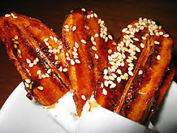
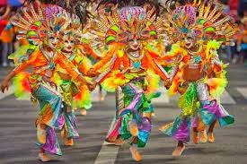

Foods
Pinasugbo is a popular, traditional Filipino delicacy hailing from the Western Visayas region (formerly Negros Island Region/NIR, now part of Region VI), particularly famous in Bacolod and Iloilo. It is a sweet, crunchy snack made from thinly sliced saba bananas that are deep-fried and coated in caramelized sugar.
View More

Fesivals💃
A vibrant, month-long annual cultural celebration held in Bacolod City, Negros Occidental (part of the Negros Island Region), typically reaching its peak around the third weekend of October.
View MoreFalls
Nestled in the lush landscapes of Negros Occidental, the falls stand as one of the region’s most breathtaking natural treasures, where cascading waters plunge gracefully into a cool, crystal-clear basin surrounded by dense greenery and towering trees. The soothing sound of rushing water, combined with the fresh mountain air, creates a serene escape from the busy pace of everyday life. Known for its scenic beauty and tranquil atmosphere, this hidden gem attracts nature lovers, adventure seekers, and travelers looking to experience the raw and untouched charm of the province, making it one of the greatest must-visit destinations in Negros Occidental.
View More